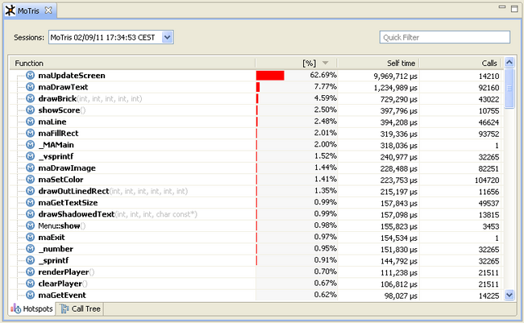
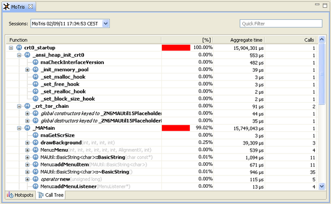

The MoSync SDK 2.6 includes an application profiler which can output performance statistics whenever you run the MoRE emulator. That makes it easy to track down performance issues and optimize your application.
To run a profiling session, right click on your project and select Profile As > Profile on MoSync Emulator.
Your application will launch in the usual way, and a new tab will open in the editor view. As soon as the application terminates, the profiling data will show on this new tab. (At this time MoSync only supports post-mortem profiling.)
There are two sub-tabs at the bottom of the view: Hotspots and Call Tree.
The Hotspots sub-tab lets you see which functions are taking the most time:

The Call Tree sub-tab shows which functions called which and the time spent in each:

The following columns are shown:
Click on any of the column headings to sort the results by that column. Click again to sort them in reverse order.
At the top right corner of the profiling view, there is a Quick Filter text box. Whatever you type there will be used to filter out functions. For example, to see all MoSync syscalls, type "ma". The filter is not case sensitive.
As well as the Quick Filter, there are more advanced filtering options in the launch configuration dialog box. To open the launch configuration dialog box, select Run > Run Configurations from the main menu, then look for Profiled MoSync Emulated App in the tree. You will see the application that you just launched there.
Highlight your application in the tree. Information about the application will be shown on the right. Select the Profiling tab. Here you will find the advanced filtering options:
To be able to shared profiling data, there is functionality to save a session to file. To do this, select File > Save As from the main menu and choose a file location. To open a profiling session, select File > Open and choose the file to open.